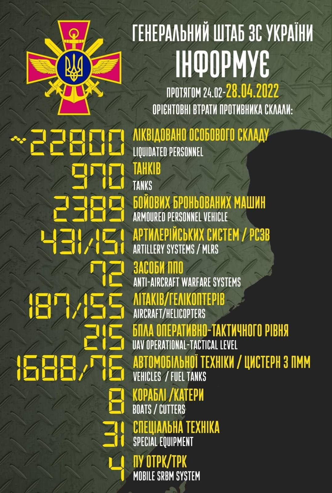

Загальні бойові втрати противника з 24.02 по 28.04
орієнтовно склали
/ The total combat losses of the enemy from 24.02 to 28.04 were approximately:
особового складу / personnel – близько/ about 22800 (+400) осіб ліквідовано / persons were liquidated,
танків / tanks ‒ 970 (+31) од,
бойових броньованих машин / APV ‒ 2389 (+47) од,
артилерійських систем / artillery systems – 431 (+10) од,
РСЗВ / MLRS – 151 (+2) од,
засоби ППО / Anti-aircraft warfare systems – 72 (+1) од,
літаків / aircraft – 187 (+2) од,
гелікоптерів / helicopters – 155 (+0) од,
автомобільної техніки / vehicles – 1688 (+22) од,
кораблі /катери / boats / cutters – 8 (+0) од,
цистерн з ПММ / fuel tanks – 76 (+0),
БПЛА оперативно-тактичного рівня / UAV operational-tactical level – 215 (+8).
Спеціальна техніка / special equipment – 31 (+0).
Пускові установки ОТРК/ТРК / mobile SRBM system – 4 (+0).
Доба героїчного протистояння Українського народу російському воєнному вторгненню: ситуація станом на ранок 29 квітня
Противник продовжує наступальні дії у Східній операційній зоні з метою встановлення повного контролю над територією Донецької і Луганської областей та утримання сухопутного коридору з тимчасово окупованим Кримом. На Слобожанському напрямку ворог продовжує зосереджувати зусилля на утриманні займаних позицій в районі міста Харкова та намагається здійснювати вогневе ураження підрозділів ЗСУ на окремих напрямках.
На Ізюмському напрямку противник активних наступальних дій не проводив. Основні зусилля зосередив на веденні розвідки, виявленні оборонних позицій підрозділів Сил оборони та їх ураженні вогнем артилерії.
На Донецькому і Таврійському напрямках, з метою недопущення перегрупування наших військ, ворог здійснює обстріли позицій із артилерії, мінометів та реактивних систем залпового вогню вздовж всієї лінії зіткнення. Російські окупанти продовжують блокування наших підрозділів у Маріуполі, в районі заводу “Азовсталь”.
На тимчасово зайнятих територіях окупаційна влада продовжує здійснювати заходи щодо обмеження пересування та затримання місцевих жителів і блокування гуманітарних вантажів з території України. Російські окупанти грабують селян. Наприклад, із сільгосптовариства у місті Кам’янка-Дніпровська викрадено понад 60 тон пшениці разом із вантажним транспортом.
За попередню добу Українськими захисниками було уражено п’ятнадцять повітряних цілей:
Українські захисники ведуть активну маневрену оборону, в окремих місцях завдають контрударів. Тільки на території Донецької та Луганської областей за минулу добу відбито дев’ять атак ворога, знищено шість танків, одну артилерійську систему, дванадцять одиниць броньованої техніки, один автомобіль та одну зенітну установку.